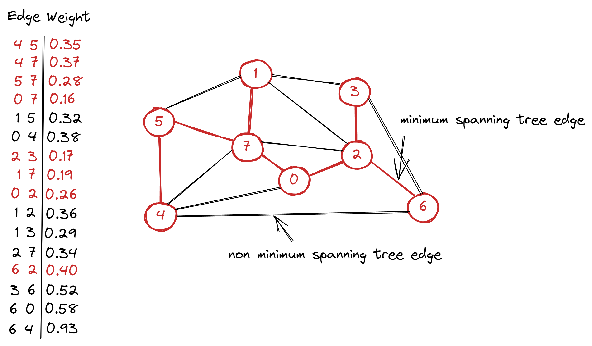

Prim's algorithm. Greedy. Algorithms series
2022-08-18Prim’s algorithm is a greedy algorithm for computing Minimum Spanning Tree (MST).
Greedy algorithms is a technique used in designing and analyzing efficient algorithms. They typically apply to optimization problems in which you make a set of choices in order to arrive at an optimal solution. A greedy algorithm always makes the choice that looks best at the moment. It makes a locally optimal choice in hope that this choice leads to globally optimal solution.
Minimum spanning tree (MST) of an edge-weighted graph is spanning tree whose weight (the sum of the weights of its edges) is no larger than the weight of any other spanning tree.
Spanning tree of a graph is a connected subgraph that includes all the vertices and has no cycles.

Unit test should check that there are right amount of edges in MST and the weight of MST is correct.
@Test
void shouldReturnMSTEdges() {
WeightedGraph weightedGraph = createWeightedGraph();
MinimumSpanningTreePrims mst = new MinimumSpanningTreePrims(weightedGraph);
Queue<Edge> mstEdges = mst.getMstEdges();
assertEquals(7, mstEdges.size());
}
@Test
void shouldReturnRightMSTWeight() {
WeightedGraph weightedGraph = createWeightedGraph();
MinimumSpanningTreePrims mst = new MinimumSpanningTreePrims(weightedGraph);
double epsilon = 0.000001d;
assertEquals(1.80, mst.getWeight(), epsilon);
}
Implementation of the Prim’s algorithm needs WeightedGraph and Edge classes. It can be found here.
The main idea of Prim’s algorithm is to add a new edge to a single growing tree at each step.
- visit vertex, that has not been visited yet (starting from the first vertex)
- mark it as visited
- get all edges for this vertex
- add edge to priority queue (by weight) if it has not visited vertices
- get (remove) lowest-weight edge from priority queue
public class MinimumSpanningTreePrims {
private final boolean[] visitedVertices;
private final Queue<Edge> mstEdges;
private final PriorityQueue<Edge> crossingEdges;
public MinimumSpanningTreePrims(WeightedGraph graph) {
crossingEdges = new PriorityQueue<>();
visitedVertices = new boolean[graph.getNumberOfVertices()];
mstEdges = new LinkedBlockingQueue<>();
visit(graph, 0);
while (!crossingEdges.isEmpty()) {
Edge edge = crossingEdges.remove();
int oneVertex = edge.getOneVertex();
int otherVertex = edge.getOtherVertex(oneVertex);
if (visitedVertices[oneVertex] && visitedVertices[otherVertex]) continue;
mstEdges.add(edge);
if (!visitedVertices[oneVertex]) visit(graph, oneVertex);
if (!visitedVertices[otherVertex]) visit(graph, otherVertex);
}
}
public Queue<Edge> getMstEdges() {
return mstEdges;
}
public double getWeight() {
double weight = 0.0;
for (Edge edge : getMstEdges()) {
weight += edge.getWeight();
}
return weight;
}
private void visit(WeightedGraph graph, int vertex) {
visitedVertices[vertex] = true;
for (Edge edge : graph.getEdgesFor(vertex)) {
if (!isOtherVertexVisited(edge, vertex)) {
crossingEdges.add(edge);
}
}
}
private boolean isOtherVertexVisited(Edge edge, int vertex) {
int otherVertex = edge.getOtherVertex(vertex);
return visitedVertices[otherVertex];
}
}
Complete implementation with test cases can be found on GitHub.
Sources:
- Algorithms by Robert Sedgewick.
- Introduction to Algorithms by Thomas H. Cormen, Charles E. Leiserson, Ronald L. Rivest, Clifford Stein.